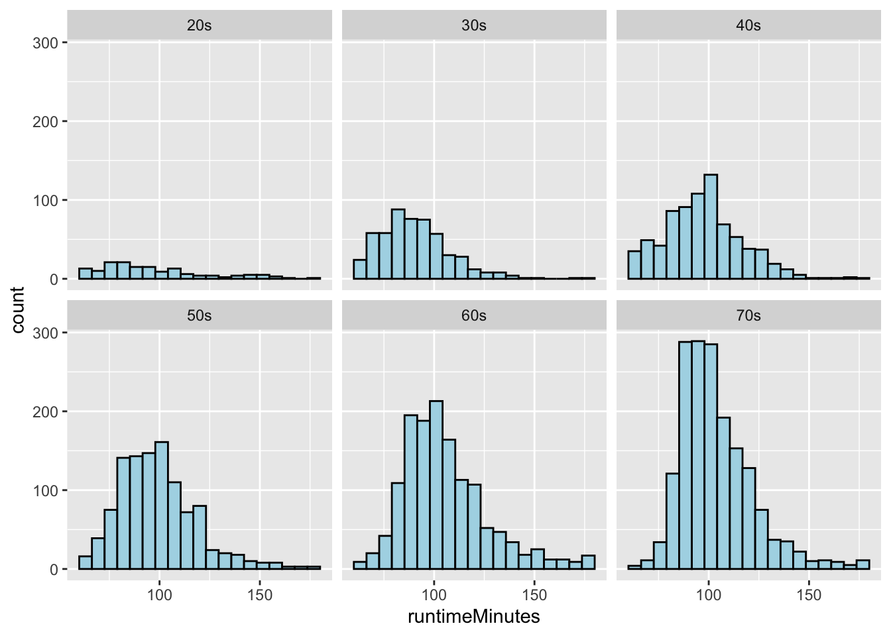
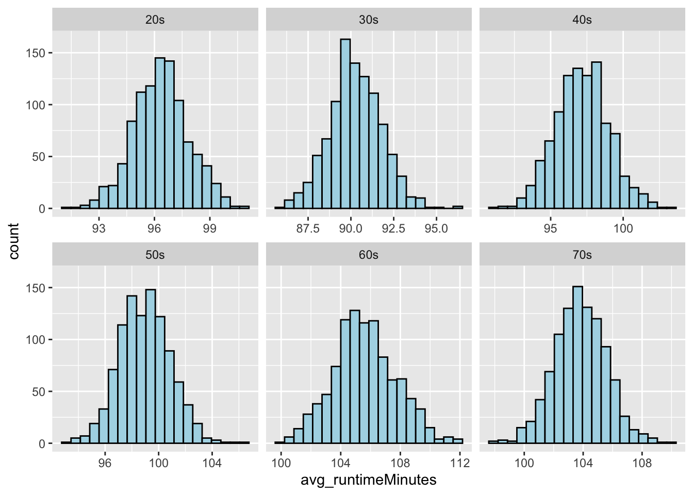
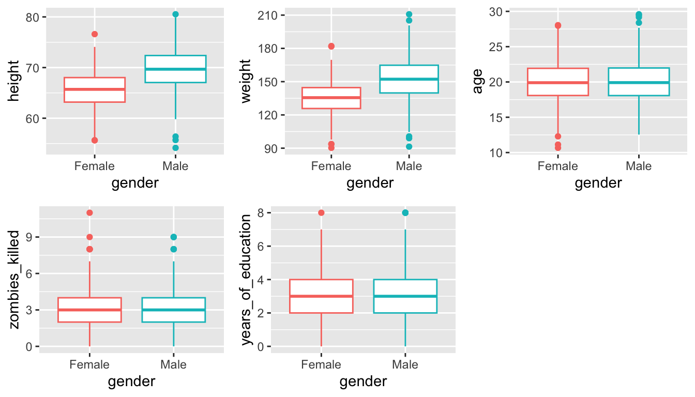
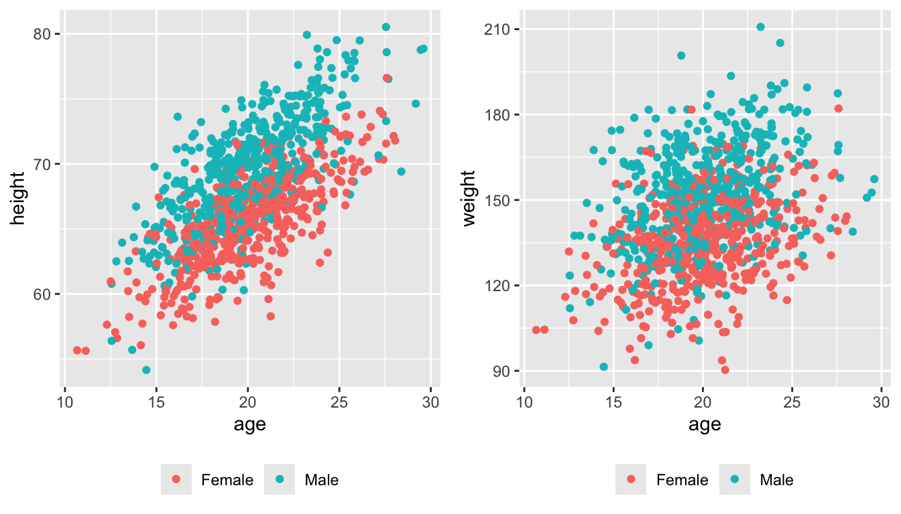
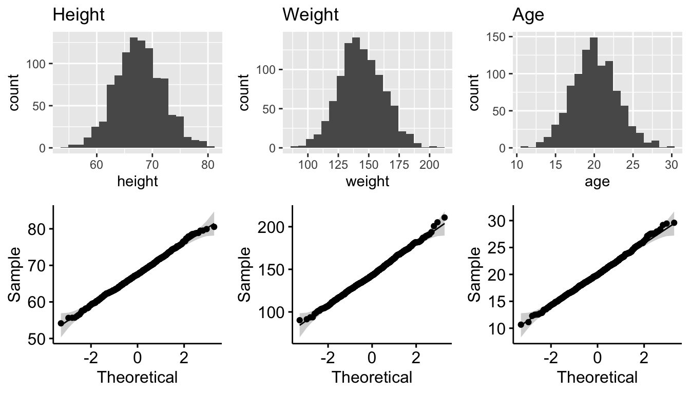
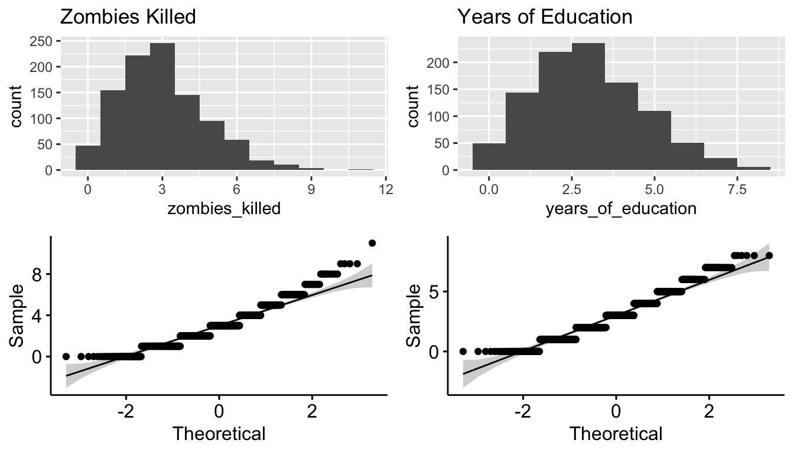
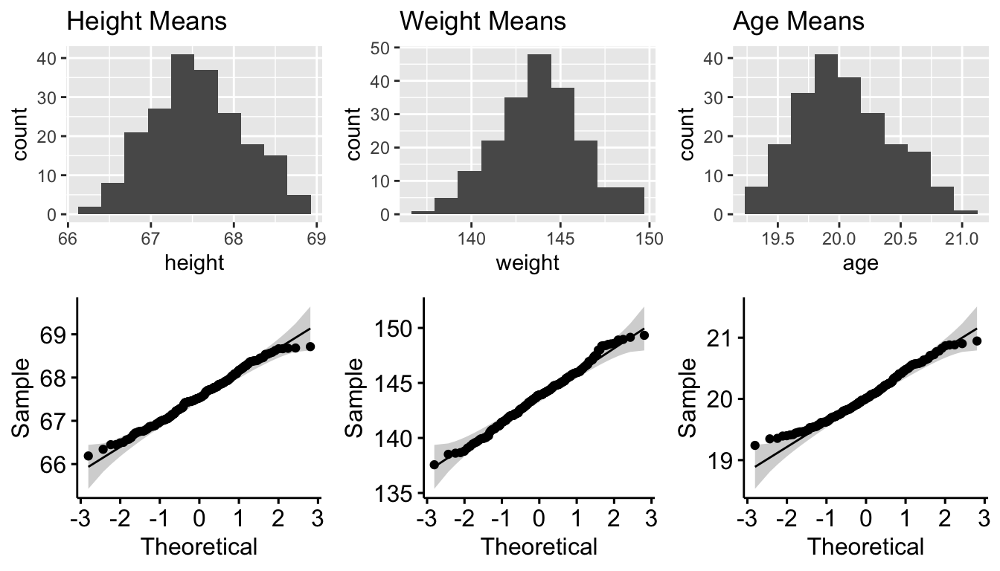
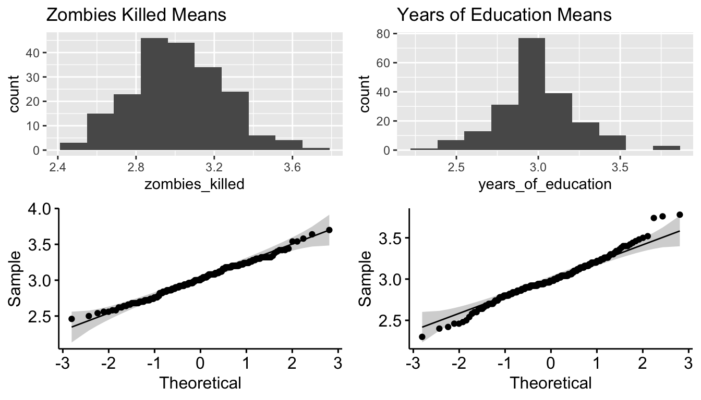

library(tidyverse)
library(mosaic) # for do() *
library(infer)
library(ggpubr) # for ggqqplot()
library(cowplot) # for arranging plots
library(kableExtra) # for kable_styling()
# define a function for calculating the population sd of a variable
sd_pop <- function(x, na.rm = TRUE) {
# adding an argument for na.rm makes the function more robust
if (na.rm == TRUE) {
x <- x[!is.na(x)]
}
sqrt(sum((x - mean(x))^2)/(length(x)))
}Exercise 05 Solution
• Solution
Challenge 1
Step 1
- Using the {tidyverse}
read_csv()function, load the “IMDB-movies.csv” dataset from this URL as a “tibble” named d.
f <- "https://raw.githubusercontent.com/difiore/ada-datasets/main/IMDB-movies.csv"
d <- read_csv(f, col_names = TRUE)## Rows: 28938 Columns: 10
## ── Column specification ────────────────────────────────────────────────────────
## Delimiter: ","
## chr (6): tconst, titleType, primaryTitle, genres, nconst, director
## dbl (4): startYear, runtimeMinutes, averageRating, numVotes
##
## ℹ Use `spec()` to retrieve the full column specification for this data.
## ℹ Specify the column types or set `show_col_types = FALSE` to quiet this message.Step 2
- Use a one-line statement to filter the dataset to include just movies from 1920 to 1979 and movies that are between 1 and 3 hours long (runtimeMinutes >= 60 and runtimeMinutes <= 180), and add a new column that codes the startYear into a new variable, decade.
d <- d |>
filter(runtimeMinutes >= 60 & runtimeMinutes <= 180 & startYear %in% 1920:1979) |>
mutate(decade = case_when(startYear %in% 1920:1929 ~ "20s", startYear %in% 1930:1939 ~
"30s", startYear %in% 1940:1949 ~ "40s", startYear %in% 1950:1959 ~ "50s",
startYear %in% 1960:1969 ~ "60s", startYear %in% 1970:1979 ~ "70s"))
nrow(d)## [1] 5651Step 3
- Use {ggplot2} (which is part of {tidyverse}) to plot histograms of the distribution of runtimeMinutes for each decade.
(p <- ggplot(data = d, aes(x = runtimeMinutes)) + geom_histogram(stat = "bin", bins = 20,
colour = "black", fill = "lightblue")) + facet_wrap(~decade)
Step 4
- Use a one-line statement to calculate the population mean and population standard deviation in runtimeMinutes for each decade and save the results in a new dataframe called results.
results <- d |>
group_by(decade) |>
dplyr::summarise(pop_n = n(), pop_mean = mean(runtimeMinutes, na.rm = TRUE),
pop_sd = sd_pop(runtimeMinutes, na.rm = TRUE))
# user-defined function or use `sdpop()` from {radiant}
kable(results, digits = 3) |>
kable_styling(font_size = 12, full_width = FALSE)| decade | pop_n | pop_mean | pop_sd |
|---|---|---|---|
| 20s | 152 | 96.257 | 26.115 |
| 30s | 530 | 90.300 | 17.272 |
| 40s | 782 | 97.203 | 19.111 |
| 50s | 1081 | 98.948 | 19.198 |
| 60s | 1386 | 105.586 | 21.224 |
| 70s | 1720 | 103.750 | 17.954 |
Step 5 and 6
Draw a single sample of 100 movies, without replacement, from each decade and calculate the single sample mean and single sample standard deviation in runtimeMinutes for each decades.
Calculate for each decade the standard error around your estimate of the population mean runtimeMinutes based on the standard deviation and sample size (n=100 movies) of your single sample.
n <- 100
set.seed(1)
s <- d |>
group_by(decade) |>
sample_n(n, replace = FALSE) |>
# or use `slice_sample()` instead of `sample_n()` if we use
# `slice_sample()`, we need to pass it either the number of rows ('n=') or
# the proportion of rows ('p=') as an argument, i.e., `slice_sample(n=100,
# replace=FALSE)`
dplyr::summarise(samp_size = n(), samp_1_mean = mean(runtimeMinutes, na.rm = TRUE),
samp_1_sd = sd(runtimeMinutes, na.rm = TRUE), samp_1_se = sd(runtimeMinutes,
na.rm = TRUE)/sqrt(samp_size))
kable(s, digits = 3) |>
kable_styling(font_size = 12, full_width = FALSE)| decade | samp_size | samp_1_mean | samp_1_sd | samp_1_se |
|---|---|---|---|---|
| 20s | 100 | 97.87 | 27.728 | 2.773 |
| 30s | 100 | 88.05 | 15.331 | 1.533 |
| 40s | 100 | 94.27 | 18.406 | 1.841 |
| 50s | 100 | 100.60 | 18.703 | 1.870 |
| 60s | 100 | 107.74 | 22.977 | 2.298 |
| 70s | 100 | 102.71 | 15.252 | 1.525 |
Step 7
- Compare these estimates to the actual population mean runtimeMinutes for each decade and to the calculated SE in the population mean for samples of size 100 based on the population standard deviation for each decade.
results <- inner_join(s, results, by = "decade") |>
mutate(pop_se = pop_sd/sqrt(n))
kable(results, digits = 3) |>
kable_styling(font_size = 12, full_width = FALSE)| decade | samp_size | samp_1_mean | samp_1_sd | samp_1_se | pop_n | pop_mean | pop_sd | pop_se |
|---|---|---|---|---|---|---|---|---|
| 20s | 100 | 97.87 | 27.728 | 2.773 | 152 | 96.257 | 26.115 | 2.612 |
| 30s | 100 | 88.05 | 15.331 | 1.533 | 530 | 90.300 | 17.272 | 1.727 |
| 40s | 100 | 94.27 | 18.406 | 1.841 | 782 | 97.203 | 19.111 | 1.911 |
| 50s | 100 | 100.60 | 18.703 | 1.870 | 1081 | 98.948 | 19.198 | 1.920 |
| 60s | 100 | 107.74 | 22.977 | 2.298 | 1386 | 105.586 | 21.224 | 2.122 |
| 70s | 100 | 102.71 | 15.252 | 1.525 | 1720 | 103.750 | 17.954 | 1.795 |
Step 8 and 9
- Generate a sampling distribution of mean runtimeMinutes for each decade by [a] drawing 1000 samples of 100 movies from each decade and, for each sample, [b] calculating the mean runtimeMinutes and the standard deviation in runtimeMinutes for each decade.
n <- 100
reps <- 1000
# using {mosaic}
s <- {
do(reps) * sample_n(group_by(d, decade), n, replace = FALSE)
} |>
# `do(rep) *` needs to be wrapped in braces in order to introduce the
# variable '.index' that we need to then pass as an argument to
# `group_by()`
group_by(decade, .index) |>
summarise(avg_runtimeMinutes = mean(runtimeMinutes, na.rm = TRUE), sd_runtimeMinutes = sd(runtimeMinutes,
na.rm = TRUE))
# or... using {purrr}
s <- map(1:reps, ~mean(runtimeMinutes ~ decade, data = sample_n(group_by(d, decade),
size = n, replace = FALSE))) |>
bind_rows() |>
pivot_longer(cols = everything(), names_to = "decade", values_to = "avg_runtimeMinutes")
# or... (and this runs fastest) using {infer}
s <- tibble(decade = character(), replicate = numeric(), avg_runtimeMinutes = numeric(),
sd_runtimeMinutes = numeric())
for (i in unique(d$decade)) {
df <- d |>
filter(decade == i) |>
rep_sample_n(size = n, reps = reps, replace = FALSE) |>
group_by(replicate) |>
summarize(avg_runtimeMinutes = mean(runtimeMinutes, na.rm = TRUE), sd_runtimeMinutes = sd(runtimeMinutes,
na.rm = TRUE)) |>
mutate(decade = i)
s <- bind_rows(s, df)
}(p <- ggplot(data = s, aes(avg_runtimeMinutes)) + geom_histogram(stat = "bin", bins = 20,
colour = "black", fill = "lightblue") + facet_wrap(~decade, scales = "free_x"))
# now, distributions are not obviously different from NORMAL :)Step 10
- Finally, compare the standard error in runtimeMinutes for samples of size 100 from each decade [1] as estimated from your first sample of 100 movies, [2] as calculated from the known population standard deviations for each decade, and [3] as estimated from the sampling distribution of sample means for each decade.
samp_dist_stats <- s |>
group_by(decade) |>
summarize(samp_dist_mean = mean(avg_runtimeMinutes), samp_dist_sd = sd(avg_runtimeMinutes))
comparison <- inner_join(results, samp_dist_stats, by = "decade") |>
dplyr::select(decade, pop_se, samp_1_se, samp_dist_sd)
kable(comparison, digits = 3) |>
kable_styling(font_size = 12, full_width = FALSE)| decade | pop_se | samp_1_se | samp_dist_sd |
|---|---|---|---|
| 20s | 2.612 | 2.773 | 1.495 |
| 30s | 1.727 | 1.533 | 1.512 |
| 40s | 1.911 | 1.841 | 1.826 |
| 50s | 1.920 | 1.870 | 1.897 |
| 60s | 2.122 | 2.298 | 2.095 |
| 70s | 1.795 | 1.525 | 1.769 |
These different estimates of the SE are all pretty close to one another, except for the “20s”, where the total number of movies in the decade is relatively small.
Challenge 2
Step 1
- Using the {tidyverse}
read_csv()function, load the “zombies.csv” dataset from this URL as a “tibble” named z. This dataset includes the first and last name and gender of the entire population of 1000 people who have survived the zombie apocalypse and are now ekeing out an existence somewhere on the Gulf Coast, along with several other variables (height, weight, age, number of years of education, number of zombies they have killed, and college major).
n <- 50 # set sample size
alpha <- 0.05 # set alpha
f <- "https://raw.githubusercontent.com/difiore/ada-datasets/main/zombies.csv"
d <- read_csv(f, col_names = TRUE)
survivors <- dplyr::select(d, "gender", "height", "weight", "age", "zombies_killed",
"years_of_education")
kable(head(survivors), digits = 3) |>
kable_styling(font_size = 12, full_width = FALSE)| gender | height | weight | age | zombies_killed | years_of_education |
|---|---|---|---|---|---|
| Female | 62.890 | 132.087 | 17.643 | 2 | 1 |
| Male | 67.803 | 146.375 | 22.590 | 5 | 3 |
| Male | 72.129 | 152.937 | 21.913 | 1 | 1 |
| Male | 66.785 | 129.742 | 18.191 | 5 | 6 |
| Female | 64.718 | 132.426 | 21.104 | 4 | 3 |
| Male | 71.243 | 152.525 | 21.484 | 1 | 4 |
Step 2
- Calculate the population mean and standard deviation for each quantitative random variable in the dataset (height, weight, age, number of zombies killed, and years of education).
pop_means <- dplyr::summarise(survivors, mean(height), mean(weight), mean(age), mean(zombies_killed),
mean(years_of_education)) # {dplyr} rocks!
pop_sds <- dplyr::summarise(survivors, sd_pop(height), sd_pop(weight), sd_pop(age),
sd_pop(zombies_killed), sd_pop(years_of_education)) # {dplyr} rocks!
# or, using `sdpop()` from {radiant} pop_SDs <- dplyr::summarise(survivors,
# sdpop(height), sdpop(weight), sdpop(age), sdpop(zombies_killed),
# sdpop(years_of_education))
# ALTERNATIVELY... we can use new dplyr::summarise(across()) construction this
# takes two arguments, .cols and .fns .cols is a vector of columns to apply the
# functions to e.g., c(height, weight, age, zombies_killed, years_of_education)
# .funs is either... [a] a single function, e.g., `mean`, [b] a purrr style
# lambda, e.g., ~ mean(.), [c] a list of functions, e.g., `list(mean=mean,
# sd=sd)` [d] a list of lambdas, e.g., `list(~ mean(.), ~sd(.)) .funs are
# applied across the set of .cols
# [a]
pop_means_a <- survivors |>
dplyr::summarise(across(c(height, weight, age, zombies_killed, years_of_education),
mean))
# [b]
pop_means_b <- survivors |>
dplyr::summarise(across(c(height, weight, age, zombies_killed, years_of_education),
~mean(.)))
# [c]
pop_means_c <- survivors |>
dplyr::summarise(across(c(height, weight, age, zombies_killed, years_of_education),
list(mean = mean)))
# [d]
pop_means_d <- survivors |>
dplyr::summarise(across(c(height, weight, age, zombies_killed, years_of_education),
list(~mean(.))))
pop_ses <- pop_sds/sqrt(n) # not needed yet, but will be later
# make a pretty table by transposing the 1-row dataframes above
variables <- c("Height", "Weight", "Age", "Kills", "Years of Ed")
pop_summary <- bind_cols(variables, t(pop_means), t(pop_sds))
names(pop_summary) <- c("variable", "pop_mean", "pop_sd")
kable(pop_summary, digits = 3) |>
kable_styling(font_size = 12, full_width = FALSE)| variable | pop_mean | pop_sd |
|---|---|---|
| Height | 67.630 | 4.308 |
| Weight | 143.907 | 18.392 |
| Age | 20.047 | 2.964 |
| Kills | 2.992 | 1.748 |
| Years of Ed | 2.996 | 1.676 |
Step 3
- Use {ggplot} and make boxplots of each of these variables by gender.
p1 <- ggplot(data = survivors, aes(x = gender, y = height))
p1 <- p1 + geom_boxplot(aes(colour = factor(gender)))
p1 <- p1 + theme(legend.position = "none")
p2 <- ggplot(data = survivors, aes(x = gender, y = weight))
p2 <- p2 + geom_boxplot(aes(colour = factor(gender)))
p2 <- p2 + theme(legend.position = "none")
p3 <- ggplot(data = survivors, aes(x = gender, y = age))
p3 <- p3 + geom_boxplot(aes(colour = factor(gender)))
p3 <- p3 + theme(legend.position = "none")
p4 <- ggplot(data = survivors, aes(x = gender, y = zombies_killed))
p4 <- p4 + geom_boxplot(aes(colour = factor(gender)))
p4 <- p4 + theme(legend.position = "none")
p5 <- ggplot(data = survivors, aes(x = gender, y = years_of_education))
p5 <- p5 + geom_boxplot(aes(colour = factor(gender)))
p5 <- p5 + theme(legend.position = "none")plot_grid(p1, p2, p3, p4, p5, nrow = 2)
# or... (p11 <- ggplot(data=pivot_longer( survivors, cols = c(height, weight,
# age, zombies_killed, years_of_education), names_to ='variable', values_to =
# 'value'), aes(x=factor(gender),y=value)) +
# geom_boxplot(aes(colour=factor(gender)))+ facet_wrap(~ variable, scales =
# 'free') + xlab('') + ylab('Frequency') + theme(legend.position = 'none'))Step 4
- Use {ggplot} and make scatterplots of height and weight in relation to age (i.e., use age as the \(x\) variable), using different colored points for males versus females. Do these variables seem to be related? In what way?
p1 <- ggplot(data = survivors, aes(x = age, y = height, colour = factor(gender))) +
geom_point() + theme(legend.position = "bottom", legend.title = element_blank())
p2 <- ggplot(data = survivors, aes(x = age, y = weight, colour = factor(gender))) +
geom_point() + theme(legend.position = "bottom", legend.title = element_blank())plot_grid(p1, p2, nrow = 1)
Both seem to be positive linear functions of age.
Step 5
- Using histograms and Q-Q plots, check whether the quantitative variables seem to be drawn from a normal distribution.
# plot the distributions
p1 <- ggplot(data = survivors, aes(x = height)) + geom_histogram(bins = 20) + ggtitle("Height")
p2 <- ggqqplot(data = survivors, x = "height")
p3 <- ggplot(data = survivors, aes(x = weight)) + geom_histogram(bins = 20) + ggtitle("Weight")
p4 <- ggqqplot(data = survivors, x = "weight")
p5 <- ggplot(data = survivors, aes(x = age)) + geom_histogram(bins = 20) + ggtitle("Age")
p6 <- ggqqplot(data = survivors, x = "age")
p7 <- ggplot(data = survivors, aes(x = zombies_killed)) + geom_histogram(binwidth = 1) +
ggtitle("Zombies Killed")
p8 <- ggqqplot(data = survivors, x = "zombies_killed")
p9 <- ggplot(data = survivors, aes(x = years_of_education)) + geom_histogram(binwidth = 1) +
ggtitle("Years of Education")
p10 <- ggqqplot(data = survivors, x = "years_of_education")plot_grid(p1, p3, p5, p2, p4, p6, nrow = 2)
plot_grid(p7, p9, p8, p10, nrow = 2)
The first three are seemingly drawn from normal distributions, but not the latter two. These are discrete variables, and they seem to be drawn from the Poisson distribution.
Step 6
- Now use the
sample_n()orslice_sample()function from {dplyr} to sample ONE subset of 50 zombie apocalypse survivors (without replacement) from this population and calculate the mean and sample standard deviation for each variable. Also estimate the standard error for each variable based on this sample and use that to construct a 95% confidence interval for each mean. You can use either the standard normal or a Student’s t distribution to derive the critical values needed to calculate the lower and upper limits of the CI. [As an additional alternative, you could estimate a CI by bootstrap resampling from that first sample as well.]
First, we create some functions for SEs and CIs
se <- function(x, type = "normal") {
if (type == "normal") {
se <- sd(x)/sqrt(length(x))
}
if (type == "poisson") {
se <- sqrt(mean(x)/length(x))
# mean(x) is estimate of lambda
}
return(se)
}
ci_norm <- function(x, alpha = 0.05) {
ci <- (mean(x) + c(-1, 1) * qnorm(1 - alpha/2) * se(x)) |>
round(3)
# confidence interval based on normal distribution
ci <- paste0("[", ci[1], "-", ci[2], "]")
names(ci) <- "CI"
return(ci)
}
ci_t <- function(x, alpha = 0.05) {
ci <- (mean(x) + c(-1, 1) * qt(1 - alpha/2, length(x) - 1) * se(x)) |>
round(3)
# confidence interval based on t distribution
ci <- paste0("[", ci[1], "-", ci[2], "]")
names(ci) <- "CI"
return(ci)
}
ci_boot <- function(x, alpha = 0.05, n_boot = 1000) {
boot <- NULL
for (i in 1:n_boot) {
boot[i] <- mean(sample(x, length(x), replace = TRUE))
}
ci <- quantile(boot, c(alpha/2, 1 - alpha/2)) |>
round(3)
ci <- paste0("[", ci[1], "-", ci[2], "]")
names(ci) <- "CI"
return(ci)
}Then, we get a sample of size n from survivors and calculate statistics…
set.seed(1) # setting the seed makes the random draws the sample across runs of code
n <- 50
s <- survivors |>
sample_n(size = n, replace = FALSE)
# or... `s <- survivors |> slice_sample(n = n, replace = FALSE)` head(s) #
# uncomment to show start of first sample of size n
samp_1_means <- s |>
dplyr::summarise(across(.cols = c(height, weight, age, zombies_killed, years_of_education),
.fns = ~mean(.)))
samp_1_SDs <- s |>
dplyr::summarise(across(.cols = c(height, weight, age, zombies_killed, years_of_education),
.fns = ~sd(.)))
samp_1_SEs <- s |>
dplyr::summarise(across(.cols = c(height, weight, age), .fns = ~se(., type = "normal")),
across(.cols = c(zombies_killed, years_of_education), .fns = ~se(., type = "poisson")))
# create a tibble of CIs based on normal distribution
samp_1_CI_norm <- s |>
dplyr::summarise(across(.cols = c(height, weight, age, zombies_killed, years_of_education),
.fns = ~ci_norm(.)))
# create a tibble of CIs based on t distribution
samp_1_CI_t <- s |>
dplyr::summarise(across(.cols = c(height, weight, age, zombies_killed, years_of_education),
.fns = ~ci_t(.)))
# create a tibble of CIs based on bootstrapping
samp_1_CI_boot <- s |>
dplyr::summarise(across(.cols = c(height, weight, age, zombies_killed, years_of_education),
.fns = ~ci_boot(., n_boot = 1000)))
# make a pretty table
samp_1_stats <- bind_rows(samp_1_means, samp_1_SDs, samp_1_SEs)
samp_1_CIs <- bind_rows(samp_1_CI_norm, samp_1_CI_t, samp_1_CI_boot)
samp_1_summary <- bind_cols(variables, t(samp_1_stats), t(samp_1_CIs))
names(samp_1_summary) <- c("Variable", "Samp 1 mean", "Samp 1 SD", "Samp 1 SE", "Samp 1 CI norm",
"Samp 1 CI t", "Samp 1 CI boot")
kable(samp_1_summary, digits = 3) |>
kable_styling(font_size = 12, full_width = FALSE)| Variable | Samp 1 mean | Samp 1 SD | Samp 1 SE | Samp 1 CI norm | Samp 1 CI t | Samp 1 CI boot |
|---|---|---|---|---|---|---|
| Height | 67.302 | 4.379 | 0.619 | [66.088-68.516] | [66.057-68.546] | [66.072-68.535] |
| Weight | 143.466 | 20.807 | 2.943 | [137.699-149.234] | [137.553-149.38] | [137.759-148.981] |
| Age | 20.088 | 3.106 | 0.439 | [19.227-20.948] | [19.205-20.97] | [19.298-20.924] |
| Kills | 3.080 | 1.850 | 0.248 | [2.567-3.593] | [2.554-3.606] | [2.62-3.62] |
| Years of Ed | 3.040 | 1.564 | 0.247 | [2.606-3.474] | [2.595-3.485] | [2.639-3.46] |
Step 7
- Then draw another 199 random samples of 50 zombie apocalypse survivors out of the population and calculate the mean for each of the these samples. Together with the first sample you drew out, you now have a set of 200 means for each variable (each based on 50 observations), which constitutes a sampling distribution for each variable. What are the means and standard deviations of the sampling distribution for each variable?
k <- 199 # additional # of sample sets
# using {mosaic}
additional_samples <- do(k) * sample_n(survivors, size = n, replace = FALSE)
# or `slice_sample(survivors, n = n, replace = FALSE)` each row will have a
# single individual (with n = 50 rows per sample) and the .index column
# contains the replicate number
# now, add a .row and .index column to our original sample
s <- s |>
mutate(.row = 1:n, .index = k + 1)
# and bind the additional + original samples into a single data frame
all_s <- bind_rows(additional_samples, s)
samp_dist <- all_s |>
group_by(.index) |>
dplyr::summarise(across(.cols = c(height, weight, age, zombies_killed, years_of_education),
.fns = ~mean(.))) |>
dplyr::select(-.index)
samp_SEs <- all_s |>
group_by(.index) |>
dplyr::summarise(across(.cols = c(height, weight, age), .fns = ~se(., type = "normal")),
across(.cols = c(zombies_killed, years_of_education), .fns = ~se(., type = "poisson"))) |>
dplyr::select(-.index)
# head(sampling_distribution) # uncomment to show start of sampling
# distributions
samp_dist_means <- samp_dist |>
dplyr::summarise(across(.cols = everything(), .fns = ~mean(.)))
samp_dist_SDs <- samp_dist |>
dplyr::summarise(across(.cols = everything(), .fns = ~sd(.)))
# make a pretty table
variables <- c("Height", "Weight", "Age", "Kills", "Years of Ed")
samp_dist_summary <- bind_cols(variables, t(samp_dist_means), t(samp_dist_SDs))
names(samp_dist_summary) <- c("Variable", "Samp Dist mean", "Samp Dist SD")
kable(samp_dist_summary, digits = 3) |>
kable_styling(font_size = 12, full_width = FALSE)| Variable | Samp Dist mean | Samp Dist SD |
|---|---|---|
| Height | 67.559 | 0.551 |
| Weight | 143.747 | 2.371 |
| Age | 20.039 | 0.381 |
| Kills | 3.016 | 0.233 |
| Years of Ed | 2.996 | 0.240 |
- How do the standard deviations of the sampling distribution for each variable compare to the standard errors estimated from your first sample of size 50?
samp_SE_means <- samp_SEs |>
dplyr::summarise(across(.cols = everything(), .fns = ~mean(.)))
# again, make a pretty table
compare_SEs <- tibble(Variable = c("Height", "Weight", "Age", "Kills", "Years of Ed"),
samp_dist_mean = samp_dist_summary$`Samp Dist mean`, `**Samp Dist SD**` = samp_dist_summary$`Samp Dist SD`,
`SE from Pop SD` = t(pop_sds/sqrt(n)) |>
round(3), `**Samp 1 SE**` = samp_1_summary$`Samp 1 SE`, `Mean SE across Samples` = t(samp_SE_means) |>
round(3))
rownames(compare_SEs) <- NULL # get rid of rownames to make table pretty
kable(compare_SEs, digits = 3) |>
kable_styling(font_size = 12, full_width = FALSE)| Variable | samp_dist_mean | **Samp Dist SD** | SE from Pop SD | **Samp 1 SE** | Mean SE across Samples |
|---|---|---|---|---|---|
| Height | 67.559 | 0.551 | 0.609 | 0.619 | 0.608 |
| Weight | 143.747 | 2.371 | 2.601 | 2.943 | 2.587 |
| Age | 20.039 | 0.381 | 0.419 | 0.439 | 0.413 |
| Kills | 3.016 | 0.233 | 0.247 | 0.248 | 0.245 |
| Years of Ed | 2.996 | 0.240 | 0.237 | 0.247 | 0.245 |
These should all be about the same! As the size of each of the k samples increases, the SD of the sampling distribution for each variable should converge to the population estimate of the standard error, i.e., to SD.pop/sqrt(n), or \(\frac{\sigma}{\sqrt{n}}\). The SE for each variable within each sample should be an estimator of this standard error, and the mean SE across samples should be really close to the population estimate.
NOTE: The columns in this table with asterisks (“**“) are those that you were specifically asked to compare.
Step 8
- Plot the sampling distributions for each variable mean. What do they look like? Are they normally distributed? What about for those variables that you concluded were not originally drawn from a normal distribution?
# plot the distributions
p1 <- ggplot(data = samp_dist, aes(x = height)) + geom_histogram(bins = 10) + ggtitle("Height Means")
p2 <- ggqqplot(data = samp_dist, x = "height")
p3 <- ggplot(data = samp_dist, aes(x = weight)) + geom_histogram(bins = 10) + ggtitle("Weight Means")
p4 <- ggqqplot(data = samp_dist, x = "weight")
p5 <- ggplot(data = samp_dist, aes(x = age)) + geom_histogram(bins = 10) + ggtitle("Age Means")
p6 <- ggqqplot(data = samp_dist, x = "age")
p7 <- ggplot(data = samp_dist, aes(x = zombies_killed)) + geom_histogram(bins = 10) +
ggtitle("Zombies Killed Means")
p8 <- ggqqplot(data = samp_dist, x = "zombies_killed")
p9 <- ggplot(data = samp_dist, aes(x = years_of_education)) + geom_histogram(bins = 10) +
ggtitle("Years of Education Means")
p10 <- ggqqplot(data = samp_dist, x = "years_of_education")plot_grid(p1, p3, p5, p2, p4, p6, nrow = 2)
plot_grid(p7, p9, p8, p10, nrow = 2)
These all look pretty normally distributed, even for those variables that were not drawn from a normal distribution initially! This becomes even more apparent if we set k to a higher number, e.g., 1000.
Step 9
- Construct a 95% confidence interval for each mean directly from the sampling distribution of sample means using the central 95% that distribution.
# Here, we use the `quantile()` function... first create a function to pull out
# CI
ci_quant <- function(x, level = 0.95) {
ci <- quantile(x, c((1 - level)/2, 1 - (1 - level)/2)) |>
round(3)
ci <- paste0("[", ci[1], "-", ci[2], "]")
names(ci) <- "CI"
return(ci)
}
samp_dist_CI <- dplyr::summarise(samp_dist, across(.cols = everything(), .fns = ~ci_quant(.,
level = 0.95)))
samp_dist_summary <- bind_cols(samp_dist_summary, t(samp_dist_CI))
names(samp_dist_summary) <- c("Variable", "Samp Dist mean", "Samp Dist SD", "Samp Dist CI")
kable(samp_dist_summary, digits = 3) |>
kable_styling(font_size = 12, full_width = FALSE)| Variable | Samp Dist mean | Samp Dist SD | Samp Dist CI |
|---|---|---|---|
| Height | 67.559 | 0.551 | [66.503-68.626] |
| Weight | 143.747 | 2.371 | [139.071-148.556] |
| Age | 20.039 | 0.381 | [19.412-20.828] |
| Kills | 3.016 | 0.233 | [2.579-3.443] |
| Years of Ed | 2.996 | 0.240 | [2.479-3.481] |
- How do the various 95% CIs you estimated compare to one another (i.e., the CIs based on one sample and the corresponding sample standard deviation versus the CI based on simulation where you created a sampling distribution across 200 samples)?
# CIs from Sample 1
compare_CIs <- dplyr::select(samp_1_summary, -c("Samp 1 mean", "Samp 1 SD", "Samp 1 SE")) |>
bind_cols(`Samp Dist CI` = samp_dist_summary$`Samp Dist CI`)
kable(compare_CIs, digits = 3) |>
kable_styling(font_size = 12, full_width = FALSE)| Variable | Samp 1 CI norm | Samp 1 CI t | Samp 1 CI boot | Samp Dist CI |
|---|---|---|---|---|
| Height | [66.088-68.516] | [66.057-68.546] | [66.072-68.535] | [66.503-68.626] |
| Weight | [137.699-149.234] | [137.553-149.38] | [137.759-148.981] | [139.071-148.556] |
| Age | [19.227-20.948] | [19.205-20.97] | [19.298-20.924] | [19.412-20.828] |
| Kills | [2.567-3.593] | [2.554-3.606] | [2.62-3.62] | [2.579-3.443] |
| Years of Ed | [2.606-3.474] | [2.595-3.485] | [2.639-3.46] | [2.479-3.481] |
Step 10
- Finally, use bootstrapping to generate a 95% confidence interval for each variable mean by bootstrapping 1000 samples, with replacement, from your original sample.
NOTE: This was already done in Step 6, where we ran the custom
CI_boot()function, and the results are included in the Samp 1 CI boot column in the table above.
The CI based on the sampling distribution generated via resampling is comparable to those based on the first sample using parametric estimates from a normal and a t distribution, as well as that based on bootstrapping using just the first sample for all of the normally distributed variables (age, height, weight). Even for the Poisson-distributed variables (zombies killed, years of education), the lower and upper bounds for the sampling distribution-based CIs are pretty comparable to those estimated from the first sample by either parametric methods or via bootstrap estimation.